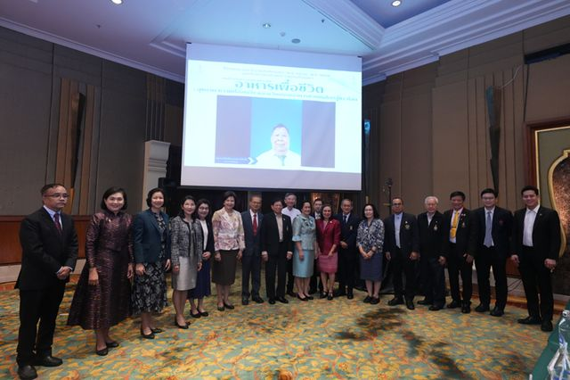
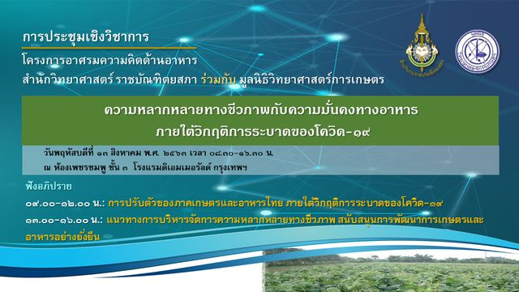
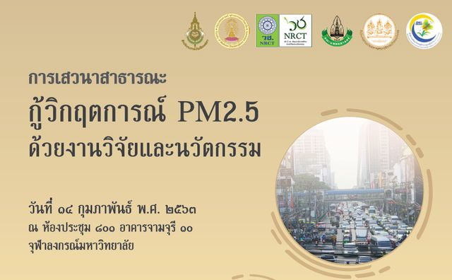
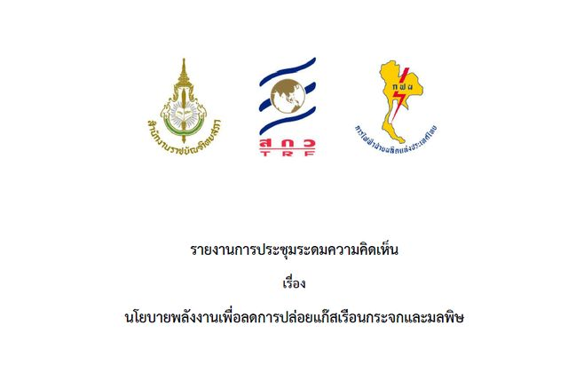
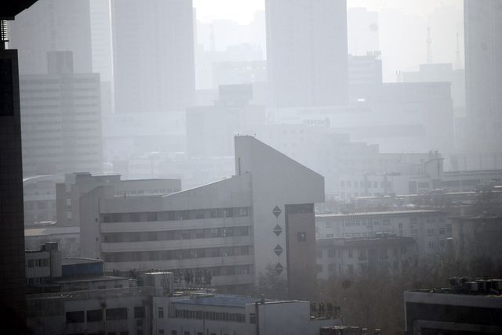
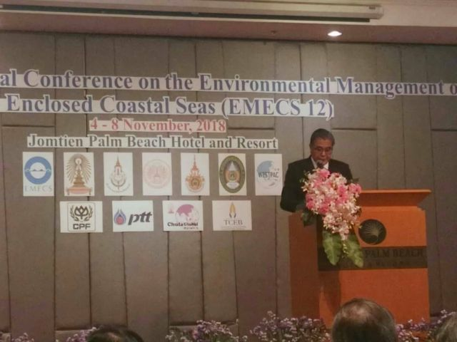

อาศรมความคิด
เวทีระดมความคิดของสำนักวิทยาศาสตร์ ด้านพลังงาน อาหาร สุขภาพและสิ่งแวดล้อม
การประชุมและข้อเสนอ
These reports are published in Thai.
-

สำนักวิทยาศาสตร์ รายงานสรุปการบรรยายและข้อเสนอแนะเชิงนโยบาย โครงการครบรอบ ๑๐๐ ปี ราชบัณฑิตยสภา(พ.ศ. ๒๔๖๗ -พ.ศ. ๒๕๖๙) ของสํานักวิทยาศาสตร์ ราชบัณฑิตยสภา ปีงบประมาณ พ.ศ. ๒๕๖๘ การประชุมวิชาการและนิทรรศการเรื่อง อาหารเพื่อชีวิต : สุขภาพ ความปลอดภัย และนวัตกรรมอาหารของคนไทยสู่ชาวโลก อ่านต่อ - สำนักวิทยาศาสตร์ การประชุมระดมความคิดเห็น เรื่องโรงไฟฟ้าพลังงานชีวมวลชุมชนเพื่อลดการปล่อยแก๊สเรือนกระจก เพิ่มความมั่นคงด้านพลังงาน และพัฒนาเศรษฐกิจฐานราก อ่านต่อ
-

สำนักวิทยาศาสตร์ การประชุมเชิงวิชาการ โครงการอาศรมความคิดด้านอาหาร สำนักวิทยาศาสตร์ ราชบัณฑิตยสภา ร่วมกับ มูลนิธิวิทยาศาสตร์การเกษตร ๑๓ สิงหาคม พ.ศ. ๒๕๖๓ ไลฟ์การประชุมฯ ในช่วงเช้า ไลฟ์การประชุมฯ ในช่วงบ่าย ดาวน์โหลดไฟล์ การปรับตัวของภาคเกษตรและอาหารไทยภายใต้วิกฤตการระบาดของโควิด 19 – คุณเอ็นนู ซื่อสุวรรณ อ่านต่อ -

สำนักวิทยาศาสตร์ กู้วิกฤตการณ์ PM2.5 ด้วยงานวิจัยและนวัตกรรม การเสวนาสาธารณะ กู้วิกฤตการณ์ PM2.5 ด้วยงานวิจัยและนวัตกรรม วันที่ ๑๔ กุมภาพันธ์ ๒๕๖๓ ณ ห้องประชุม ๘๐๑ อาคารจามจุรี ๑๐ จุฬาลงกรณ์มหาวิทยาลัย อ่านต่อ - สำนักวิทยาศาสตร์ ข้อมูลใหม่-กลวิธานการเกิดมลภาวะอากาศฝุ่น PM2.5 รุนแรง ในเดือนมกราคม 2562 และ 2563 ผู้ร่วมเสวนาสาธารณะครั้งที่ 1 ดังนี้ ศ.เกียรติคุณ นพ. สุรพล อิสรไกรศีล ราชบัณฑิตและนายกราชบัณฑิตยสภาแห่งประเทศไทย ศ.เกียรติคุณ ดร. นสพ. ณรงค์ศักดิ์ ชัยบุตร ราชบัณฑิตและประธานประธานสำนักวิทยาศาสตร์ ราชบัณฑิตยสภาแห่งประเทศไทย ศ.เกียรติคุณ ดร. เปี่ยมศักดิ์ เมนะเศ อ่านต่อ
-

สำนักวิทยาศาสตร์ นโยบายพลังงานเพื่อลดการปล่อยแก๊สเรือนกระจกและมลพิษ รายงานการประชุมระดมความคิดเห็นเรื่องนโยบายพลังงานเพื่อลดการปล่อยแก๊สเรือนกระจกและมลพิษโดยสำนักวิทยาศาสตร์ ราชบัณฑิตยสภาโครงการร่วมสนับสนุนทุนวิจัยและพัฒนา กฟผ.-สกว. อ่านต่อ -

สำนักวิทยาศาสตร์ หนังสือปกขาว PM 2.5 สำนักวิทยาศาสตร์ ราชบัณฑิตยสภาแห่งประเทศไทยได้มีการจัดตั้งอาศรมความคิดขึ้นมา ๔ ด้าน ตั้งแต่ปี ๒๕๕๗ ทั้งนี้โดยมีวัตถุประสงค์ให้ราชบัณฑิต ภาคีสมาชิก และนักวิชาการที่เกี่ยวข้องร่วมกัน ค้นคว้าวิจัยเชิงนโนบาย อำนาจหน้าที่ตามมาตร ๘ แห่งราชบัณฑิตยสภา พ.ศ. ๒๕๕๘ อ่านต่อ - สำนักวิทยาศาสตร์ การขับเคลื่อนยุทธศาสตร์ชาติ และปฎิรูปประเทศด้านการจัดการมลพิษอากาศ PM2.5 ทั้งระบบ โครงการอาศรมความคิดด้านระบบโลกศาสตร์และวิทยาศาสตร์สิ่งแวดล้อมการเสวนา เรื่อง “การขับเคลื่อนยุทธศาสตร์ชาติ และปฎิรูปประเทศด้านการจัดการมลพิษอากาศ PM2.5 ทั้งระบบ” จัดโดย สำนักวิทยาศาสตร์ ราชบัณฑิตยสภา ร่วมกับ กรรมการจัดทำยุทธศาสตร์ชาติด้านการสร้างการเติบโตบนคุณภ อ่านต่อ
- สำนักวิทยาศาสตร์ เปิดวงเสวนา ขับเคลื่อนยุทธศาสตร์ชาติและปฏิรูปประเทศ ด้านการจัดการมลพิษทางอากาศ PM 2.5 ทั้งระบบ จากสถานการณ์ค่าฝุ่นละอองเกินมาตรฐาน หรือปัญหาฝุ่น PM 2.5 ที่เกิดขึ้นกับประเทศไทยในช่วงที่ผ่านมา ได้ส่งผลกระทบต่อสุขภาพของประชาชนเป็นวงกว้าง ตลอดจนกระทบถึงภาพลักษณ์ของประเทศ ทั้งด้านการท่องเที่ยว และการจัดการด้านสิ่งแวดล้อมของประเทศไทย ปัญหาดังกล่าวจึงถูกยกขึ้น อ่านต่อ
-

สำนักวิทยาศาสตร์ The 12th International Conference on the Environmental Management of the Enclosed Coastal Seas (EMECS 12) The 12th International Conference on the Environmental Management of the Enclosed Coastal Seas (EMECS 12) is scheduled tobe held in Pattaya City, Thailand during 4-8 … อ่านต่อ
ไม่พบรายการที่ตรงกับคำค้น